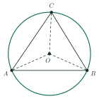
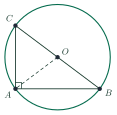
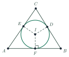
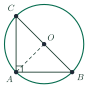

Circumcircle and Incircle of a TriangleĐường tròn ngoại tiếp và đường tròn nội tiếp của một tam giác
Grade 9 · Topic: Circumcircle and IncircleLớp 9 · Chủ đề: Đường tròn ngoại tiếp và đường tròn nội tiếp
1Lesson IntroductionGiới thiệu bài học
Learning goalsMục tiêu bài học
By the end of this lesson you can:
Sau bài học này, em có thể:
recognize the circumcircle and the incircle of a triangle and their centers;
nhận biết được đường tròn ngoại tiếp, đường tròn nội tiếp của tam giác và tâm của chúng;
know that the circumcenter of a right triangle is the midpoint of the hypotenuse;
biết tâm đường tròn ngoại tiếp tam giác vuông là trung điểm cạnh huyền;
compute \(R\) and \(r\) of right triangles and equilateral triangles;
tính được \(R\), \(r\) của tam giác vuông, tam giác đều;
solve real problems (a lamp equally far from three points, the largest round flower bed).
giải được bài toán thực tế (đèn cách đều ba điểm, bồn hoa tròn lớn nhất).
2Mathematical VocabularyTừ vựng Toán học
circumcircle / circumcenter / circumradius – the circle through the three vertices; its center \(O\); its radius \(R\).
Đường tròn ngoại tiếp – đường tròn đi qua ba đỉnh; tâm \(O\); bán kính \(R\).
incircle / incenter / inradius – the circle touching the three sides; its center \(I\); its radius \(r\).
Đường tròn nội tiếp – đường tròn tiếp xúc với ba cạnh; tâm \(I\); bán kính \(r\).
perpendicular bisector – the line perpendicular to a segment at its midpoint.
Đường trung trực – đường thẳng vuông góc với đoạn thẳng tại trung điểm.
angle bisector – the ray dividing an angle into two equal angles.
Đường phân giác – tia chia góc thành hai góc bằng nhau.
equidistant – at equal distances.
Cách đều – có khoảng cách bằng nhau.
3Useful English PhrasesCụm từ tiếng Anh thường gặp
Triangle \(ABC\) is inscribed in the circle \((O)\).
Tam giác \(ABC\) nội tiếp đường tròn \((O)\).
The circle \((I)\) is inscribed in triangle \(ABC\).
Đường tròn \((I)\) nội tiếp tam giác \(ABC\).
The circumcenter is equidistant from the three vertices.
Tâm đường tròn ngoại tiếp cách đều ba đỉnh.
The incenter is equidistant from the three sides.
Tâm đường tròn nội tiếp cách đều ba cạnh.
Find the circumradius and the inradius.
Tính bán kính đường tròn ngoại tiếp và bán kính đường tròn nội tiếp.
4Prerequisite ReviewÔn tập kiến thức nền
Grade 7. The three perpendicular bisectors of a triangle meet at one point, equidistant from the vertices; the three angle bisectors meet at one point, equidistant from the sides.
Lớp 7. Ba đường trung trực của tam giác cùng đi qua một điểm, điểm này cách đều ba đỉnh; ba đường phân giác cùng đi qua một điểm, điểm này cách đều ba cạnh.
Lesson 27. An inscribed angle subtending a semicircle is a right angle.
Bài 27. Góc nội tiếp chắn nửa đường tròn là góc vuông.
5TheoryLý thuyết
5.1 The circumcircle of a triangleĐường tròn ngoại tiếp tam giác
DefinitionĐịnh nghĩa
The circle passing through the three vertices of a triangle is its circumcircle; the triangle is inscribed in the circle.
Đường tròn đi qua ba đỉnh của một tam giác gọi là đường tròn ngoại tiếp tam giác đó; khi đó tam giác được gọi là nội tiếp đường tròn.
Its center \(O\) is the intersection of the three perpendicular bisectors of the sides; \(OA=OB=OC=R\).
Tâm \(O\) là giao điểm của ba đường trung trực của ba cạnh; \(OA=OB=OC=R\).

Special casesTrường hợp đặc biệt
Right triangle: the circumcenter is the midpoint of the hypotenuse, \(R=\dfrac{\text{hypotenuse}}{2}\).
Tam giác vuông: tâm đường tròn ngoại tiếp là trung điểm cạnh huyền, \(R=\dfrac{\text{cạnh huyền}}{2}\).
Equilateral triangle with side \(a\): \(R=\dfrac{a\sqrt3}{3}\) (the center is the centroid, \(R=\dfrac23h\), \(h=\dfrac{a\sqrt3}{2}\)).
Tam giác đều cạnh \(a\): \(R=\dfrac{a\sqrt3}{3}\) (tâm là trọng tâm, \(R=\dfrac23h\) với \(h=\dfrac{a\sqrt3}{2}\)).

5.2 The incircle of a triangleĐường tròn nội tiếp tam giác
DefinitionĐịnh nghĩa
The circle touching the three sides of a triangle is its incircle; the triangle is circumscribed about the circle.
Đường tròn tiếp xúc với ba cạnh của một tam giác gọi là đường tròn nội tiếp tam giác đó; khi đó tam giác được gọi là ngoại tiếp đường tròn.
Its center \(I\) is the intersection of the three angle bisectors; \(I\) is equidistant from the sides: \(ID=IE=IF=r\).
Tâm \(I\) là giao điểm của ba đường phân giác trong của tam giác; \(I\) cách đều ba cạnh: \(ID=IE=IF=r\).
Equilateral triangle with side \(a\): \(I\equiv O\) and \(r=\dfrac{a\sqrt3}{6}=\dfrac{R}{2}\).
Tam giác đều cạnh \(a\): \(I\) trùng \(O\) và \(r=\dfrac{a\sqrt3}{6}=\dfrac{R}{2}\).

6Worked ExamplesVí dụ có lời giải
ExampleVí dụ 1RememberingNhận biết – Which center?Tâm nào?
(a) Which lines meet at the center of the circumcircle of a triangle?
(b) Which point of a triangle is equidistant from its three sides?
a) Những đường nào đi qua tâm đường tròn ngoại tiếp tam giác?
b) Điểm nào của tam giác cách đều ba cạnh?
Analysis: Circumcircle ↔ vertices ↔ perpendicular bisectors; incircle ↔ sides ↔ angle bisectors.
Phân tích: Đường tròn ngoại tiếp ↔ ba đỉnh ↔ đường trung trực; đường tròn nội tiếp ↔ ba cạnh ↔ đường phân giác.
(a) The three perpendicular bisectors of the sides.
a) Ba đường trung trực của ba cạnh.
(b) The incenter, the intersection of the three angle bisectors.
b) Tâm đường tròn nội tiếp, giao điểm của ba đường phân giác.
(a) Perpendicular bisectors;
(b) the incenter.
a) Ba đường trung trực;
b) tâm đường tròn nội tiếp.
ExampleVí dụ 2UnderstandingThông hiểu – A right triangleTam giác vuông
Triangle \(ABC\) is right-angled at \(A\) with \(AB=6\) cm, \(AC=8\) cm. Find the center and the radius of its circumcircle.
Tam giác \(ABC\) vuông tại \(A\) có \(AB=6\) cm, \(AC=8\) cm. Xác định tâm và tính bán kính đường tròn ngoại tiếp tam giác.
Analysis: \(\widehat{BAC}=90^\circ\) subtends a semicircle, so \(BC\) is a diameter.
Phân tích: \(\widehat{BAC}=90^\circ\) chắn nửa đường tròn nên \(BC\) là đường kính.
\(BC=\sqrt{6^2+8^2}=10\) cm.
\(BC=\sqrt{6^2+8^2}=10\) cm.
The center is the midpoint \(O\) of \(BC\); \(R=\dfrac{10}{2}=5\) cm.
Tâm là trung điểm \(O\) của \(BC\); \(R=\dfrac{10}{2}=5\) cm.
The midpoint of \(BC\); \(R=5\) cm.
Trung điểm \(BC\); \(R=5\) cm.
ExampleVí dụ 3Basic applicationVận dụng thấp – An equilateral triangleTam giác đều
An equilateral triangle has side 6 cm. Find its circumradius \(R\) and inradius \(r\).
Tam giác đều có cạnh 6 cm. Tính bán kính \(R\) của đường tròn ngoại tiếp và bán kính \(r\) của đường tròn nội tiếp.
Analysis: The center is the centroid: it divides each height in the ratio \(2:1\).
Phân tích: Tâm là trọng tâm: chia mỗi đường cao theo tỉ số \(2:1\).
Height \(h=\dfrac{6\sqrt3}{2}=3\sqrt3\) cm.
Đường cao \(h=\dfrac{6\sqrt3}{2}=3\sqrt3\) cm.
\(R=\dfrac23h=2\sqrt3\) cm, \(r=\dfrac13h=\sqrt3\) cm.
\(R=\dfrac23h=2\sqrt3\) cm, \(r=\dfrac13h=\sqrt3\) cm.
\(R=2\sqrt3\) cm, \(r=\sqrt3\) cm.
\(R=2\sqrt3\) cm, \(r=\sqrt3\) cm.
ExampleVí dụ 4Basic applicationVận dụng thấp – From \(R\) to the sideTừ \(R\) tính cạnh
An equilateral triangle is inscribed in a circle of radius 4 cm. Find its side and its area.
Tam giác đều nội tiếp đường tròn bán kính 4 cm. Tính cạnh và diện tích của tam giác.
Analysis: \(R=\dfrac{a\sqrt3}{3}\Rightarrow a=R\sqrt3\).
Phân tích: \(R=\dfrac{a\sqrt3}{3}\Rightarrow a=R\sqrt3\).
\(a=4\sqrt3\) cm; \(h=\dfrac{a\sqrt3}{2}=6\) cm.
\(a=4\sqrt3\) cm; \(h=\dfrac{a\sqrt3}{2}=6\) cm.
\(S=\dfrac12\cdot4\sqrt3\cdot6=12\sqrt3\) cm².
\(S=\dfrac12\cdot4\sqrt3\cdot6=12\sqrt3\) cm².
\(4\sqrt3\) cm; \(12\sqrt3\) cm².
\(4\sqrt3\) cm; \(12\sqrt3\) cm².
ExampleVí dụ 5ApplicationVận dụng – A lamp and a flower bedĐèn chiếu và bồn hoa
(a) A garden has the shape of a right triangle \(ABC\) (right angle at \(A\)), \(AB=9\) m, \(AC=12\) m. Where should a lamp be placed so that it is equally far from \(A\), \(B\), \(C\), and how far?
(b) A yard is an equilateral triangle with side 12 m. Find the radius of the largest round flower bed inside it.
a) Một khu vườn có dạng tam giác vuông \(ABC\) (vuông tại \(A\)), \(AB=9\) m, \(AC=12\) m. Đặt đèn ở đâu để cách đều \(A\), \(B\), \(C\), và cách bao xa?
b) Một sân có dạng tam giác đều cạnh 12 m. Tính bán kính của bồn hoa hình tròn lớn nhất đặt trong sân.
Analysis:
(a) circumcenter;
(b) the largest circle inside a triangle is its incircle.
Phân tích:
a) tâm đường tròn ngoại tiếp;
b) hình tròn lớn nhất nằm trong tam giác là hình tròn nội tiếp.
(a) \(BC=\sqrt{9^2+12^2}=15\) m; the lamp is at the midpoint of \(BC\), 7.5 m from each corner.
a) \(BC=\sqrt{9^2+12^2}=15\) m; đặt đèn tại trung điểm \(BC\), cách mỗi góc 7,5 m.
(b) \(r=\dfrac{12\sqrt3}{6}=2\sqrt3\approx3.5\) m.
b) \(r=\dfrac{12\sqrt3}{6}=2\sqrt3\approx3{,}5\) m.
(a) Midpoint of \(BC\), 7.5 m;
(b) \(2\sqrt3\approx3.5\) m.
a) Trung điểm \(BC\), 7,5 m;
b) \(2\sqrt3\approx3{,}5\) m.
7PracticeBài tập luyện tập
A. Multiple ChoiceA. Trắc nghiệm nhiều lựa chọn
The center of the incircle of triangle \(ABC\) is the point where … meet.
Tâm đường tròn nội tiếp tam giác \(ABC\) là giao điểm của …
Answer: a. The incenter is equidistant from the three sides, so it lies on the three angle bisectors.
Đáp án a. Tâm đường tròn nội tiếp cách đều ba cạnh nên nằm trên ba đường phân giác trong.
Triangle \(ABC\) is right-angled at \(A\), \(AB=9\) cm, \(AC=12\) cm. Find the radius of its circumcircle.
Tam giác \(ABC\) vuông tại \(A\) có \(AB=9\) cm, \(AC=12\) cm. Tính bán kính đường tròn ngoại tiếp tam giác đó.
Answer: c. \(BC=\sqrt{9^2+12^2}=15\); the center is the midpoint of the hypotenuse, \(R=\dfrac{BC}{2}=7.5\) cm.
Đáp án c. \(BC=\sqrt{9^2+12^2}=15\); tâm là trung điểm cạnh huyền, \(R=\dfrac{BC}{2}=7{,}5\) cm.
An equilateral triangle has side 18 cm. Find the radius of its circumcircle.
Tam giác đều có cạnh 18 cm. Tính bán kính đường tròn ngoại tiếp của tam giác.
Answer: d. \(R=\dfrac{a\sqrt3}{3}\), \(r=\dfrac{a\sqrt3}{6}\) with \(a=18\): \(R=6\sqrt3\text{ cm}\).
Đáp án d. \(R=\dfrac{a\sqrt3}{3}\), \(r=\dfrac{a\sqrt3}{6}\) với \(a=18\): \(R=6\sqrt3\text{ cm}\).
B. True or FalseB. Đúng hoặc sai
In an equilateral triangle \(HIK\), the circumradius is 3 times the inradius.
Trong tam giác đều \(HIK\), bán kính đường tròn ngoại tiếp gấp 3 lần bán kính đường tròn nội tiếp.
False. \(R=\dfrac{a\sqrt3}{3}=2\cdot\dfrac{a\sqrt3}{6}=2r\).
Sai. \(R=\dfrac{a\sqrt3}{3}=2\cdot\dfrac{a\sqrt3}{6}=2r\).
A right triangle has legs 5 cm and 12 cm. The radius of its circumcircle is \(6.5\) cm.
Một tam giác vuông có hai cạnh góc vuông 5 cm và 12 cm. Bán kính đường tròn ngoại tiếp tam giác đó là \(6{,}5\) cm.
True. Hypotenuse \(13\) cm; \(R=6.5\) cm.
Đúng. Cạnh huyền \(13\) cm; \(R=6{,}5\) cm.
C. Short AnswerC. Trả lời ngắn
Triangle \(MNP\) is right-angled at \(M\) with \(MN=3\) cm and \(MP=4\) cm. Find the radius (cm) of its circumcircle.
Tam giác \(MNP\) vuông tại \(M\) có \(MN=3\) cm, \(MP=4\) cm. Tính bán kính (cm) đường tròn ngoại tiếp tam giác.
Enter a number (e.g. 6.5).
Nhập một số (ví dụ 6,5).
Answer: 2.5. \(NP=5\), \(R=\dfrac{NP}{2}=2.5\).
Đáp số: 2,5. \(NP=5\), \(R=\dfrac{NP}{2}=2{,}5\).
An equilateral triangle has circumradius 14 cm. Find its inradius (cm).
Một tam giác đều có bán kính đường tròn ngoại tiếp 14 cm. Tính bán kính đường tròn nội tiếp (cm).
Enter a number.
Nhập một số.
Answer: 7. \(r=\dfrac{R}{2}=7\).
Đáp số: 7. \(r=\dfrac{R}{2}=7\).
D1. Self-practice – RememberingD1. Tự luyện – Mức Nhận biết
Triangle \(ABC\) is inscribed in a circle (the circle is its circumcircle) when…
Tam giác \(ABC\) nội tiếp đường tròn (đường tròn ngoại tiếp tam giác) khi…
Answer: b. The circumcircle passes through the three vertices.
Đáp án b. Đường tròn ngoại tiếp đi qua ba đỉnh của tam giác.
Triangle \(ABC\) is right-angled at \(A\). The center of its circumcircle is…
Tam giác \(ABC\) vuông tại \(A\). Tâm đường tròn ngoại tiếp tam giác là…
Answer: c. The right angle subtends a semicircle, so \(BC\) is a diameter.
Đáp án c. Góc vuông chắn nửa đường tròn nên \(BC\) là đường kính.
For an equilateral triangle with side \(a\), the height \(h\) is…
Với tam giác đều cạnh \(a\), đường cao \(h\) là…
Answer: c. \(h=\dfrac{a\sqrt3}{2}\), \(R=\dfrac23h=\dfrac{a\sqrt3}{3}\), \(r=\dfrac13h=\dfrac{a\sqrt3}{6}\).
Đáp án c. \(h=\dfrac{a\sqrt3}{2}\), \(R=\dfrac23h=\dfrac{a\sqrt3}{3}\), \(r=\dfrac13h=\dfrac{a\sqrt3}{6}\).
D2. Self-practice – UnderstandingD2. Tự luyện – Mức Thông hiểu
Triangle \(ABC\) has angles \(114^\circ\), \(42^\circ\), \(24^\circ\). The center of its circumcircle is…
Tam giác \(ABC\) có ba góc \(114^\circ\), \(42^\circ\), \(24^\circ\). Tâm đường tròn ngoại tiếp tam giác…
Answer: a. Acute triangle: inside; right triangle: midpoint of the hypotenuse; obtuse triangle: outside.
Đáp án a. Tam giác nhọn: tâm ở trong; tam giác vuông: trung điểm cạnh huyền; tam giác tù: tâm ở ngoài.
A right triangle has legs 3 cm and 4 cm. Find the length (circumference) of its circumcircle.
Tam giác vuông có hai cạnh góc vuông 3 cm và 4 cm. Tính độ dài đường tròn ngoại tiếp tam giác.
Answer: c. \(C=2\pi R=\pi\cdot5=5\pi\text{ cm}\).
Đáp án c. \(C=2\pi R=\pi\cdot5=5\pi\text{ cm}\).
An equilateral triangle has height 6 cm. Find the radius of its incircle.
Tam giác đều có đường cao 6 cm. Tính bán kính đường tròn nội tiếp của tam giác.
Answer: d. The center divides the height in the ratio \(2:1\): \(R=\dfrac23h=4\), \(r=\dfrac13h=2\).
Đáp án d. Tâm chia đường cao theo tỉ số \(2:1\): \(R=\dfrac23h=4\), \(r=\dfrac13h=2\).
D3. Self-practice – Basic applicationD3. Tự luyện – Mức Vận dụng thấp
Triangle \(ABC\) is right-angled and isosceles at \(A\) with \(AB=AC=12\) cm. Find the radius of its circumcircle.

Tam giác \(ABC\) vuông cân tại \(A\) có \(AB=AC=12\) cm. Tính bán kính đường tròn ngoại tiếp tam giác.
Answer: a. \(BC=12\sqrt2\), \(R=\dfrac{BC}{2}=6\sqrt2\text{ cm}\).
Đáp án a. \(BC=12\sqrt2\), \(R=\dfrac{BC}{2}=6\sqrt2\text{ cm}\).
An equilateral triangle has inradius \(r=4\) cm. Find its side.
Tam giác đều có bán kính đường tròn nội tiếp \(r=4\) cm. Tính độ dài cạnh.
Answer: b. \(a=2r\sqrt3=8\sqrt3\text{ cm}\).
Đáp án b. \(a=2r\sqrt3=8\sqrt3\text{ cm}\).
Triangle \(ABC\) is inscribed in \((O)\) and \(\widehat{BAC}=62^\circ\). Find \(\widehat{BOC}\).
Tam giác \(ABC\) nội tiếp đường tròn \((O)\) và \(\widehat{BAC}=62^\circ\). Tính \(\widehat{BOC}\).
Answer: d. \(\widehat{BOC}\) is the central angle intercepting the same arc \(BC\) as the inscribed angle \(\widehat{BAC}\): \(2\cdot62^\circ=124^\circ\).
Đáp án d. \(\widehat{BOC}\) là góc ở tâm chắn cùng cung \(BC\) với góc nội tiếp \(\widehat{BAC}\): \(2\cdot62^\circ=124^\circ\).
D4. Self-practice – Advanced applicationD4. Tự luyện – Mức Vận dụng
A garden has the shape of a right triangle \(ABC\) (right angle at \(A\)), \(AB=7\) m, \(AC=24\) m. A lamp must be equally far from \(A\), \(B\), \(C\). Where is it, and how far from each corner?
Một khu vườn có dạng tam giác vuông \(ABC\) (vuông tại \(A\)), \(AB=7\) m, \(AC=24\) m. Cần đặt một đèn chiếu cách đều ba góc vườn \(A\), \(B\), \(C\). Đặt đèn ở đâu và cách mỗi góc bao xa?
Answer: d. Equally far from the three vertices: the circumcenter = midpoint of the hypotenuse \(BC=25\); distance \(R=12.5\) m.
Đáp án d. Cách đều ba đỉnh: tâm đường tròn ngoại tiếp = trung điểm cạnh huyền \(BC=25\); khoảng cách \(R=12{,}5\) m.
A yard has the shape of an equilateral triangle with side 18 m. What is the area of the largest round flower bed that fits inside the yard?
Một sân có dạng tam giác đều cạnh 18 m. Tính diện tích bồn hoa hình tròn lớn nhất đặt được trong sân.
Answer: d. The largest circle is the incircle: \(r=\dfrac{18\sqrt3}{6}=3\sqrt3\text{ m}\); \(S=\pi r^2=27\pi\text{ m}^2\).
Đáp án d. Hình tròn lớn nhất là hình tròn nội tiếp: \(r=\dfrac{18\sqrt3}{6}=3\sqrt3\text{ m}\); \(S=\pi r^2=27\pi\text{ m}^2\).
An equilateral triangle is inscribed in a circle of radius 4 cm. Find its perimeter.
Một tam giác đều nội tiếp đường tròn bán kính 4 cm. Tính chu vi tam giác.
Answer: a. \(a=R\sqrt3=4\sqrt3\text{ cm}\); perimeter \(3a=12\sqrt3\text{ cm}\).
Đáp án a. \(a=R\sqrt3=4\sqrt3\text{ cm}\); chu vi \(3a=12\sqrt3\text{ cm}\).
A. Multiple ChoiceA. Trắc nghiệm nhiều lựa chọn
The center of the incircle of triangle \(DEF\) is the point where … meet.
Tâm đường tròn nội tiếp tam giác \(DEF\) là giao điểm của …
Answer: c. The incenter is equidistant from the three sides, so it lies on the three angle bisectors.
Đáp án c. Tâm đường tròn nội tiếp cách đều ba cạnh nên nằm trên ba đường phân giác trong.
Triangle \(ABC\) is right-angled at \(A\), \(AB=12\) cm, \(AC=16\) cm. Find the radius of its circumcircle.
Tam giác \(ABC\) vuông tại \(A\) có \(AB=12\) cm, \(AC=16\) cm. Tính bán kính đường tròn ngoại tiếp tam giác đó.
Answer: b. \(BC=\sqrt{12^2+16^2}=20\); the center is the midpoint of the hypotenuse, \(R=\dfrac{BC}{2}=10\) cm.
Đáp án b. \(BC=\sqrt{12^2+16^2}=20\); tâm là trung điểm cạnh huyền, \(R=\dfrac{BC}{2}=10\) cm.
An equilateral triangle has side 12 cm. Find the radius of its incircle.
Tam giác đều có cạnh 12 cm. Tính bán kính đường tròn nội tiếp của tam giác.
Answer: d. \(R=\dfrac{a\sqrt3}{3}\), \(r=\dfrac{a\sqrt3}{6}\) with \(a=12\): \(r=2\sqrt3\text{ cm}\).
Đáp án d. \(R=\dfrac{a\sqrt3}{3}\), \(r=\dfrac{a\sqrt3}{6}\) với \(a=12\): \(r=2\sqrt3\text{ cm}\).
B. True or FalseB. Đúng hoặc sai
The center \(I\) of the incircle of triangle \(ABC\) is equidistant from its three vertices.
Tâm \(I\) của đường tròn nội tiếp tam giác \(ABC\) cách đều ba đỉnh của tam giác.
False. \(I\) is equidistant from the three sides (the distance is \(r\)), not in general from the vertices.
Sai. \(I\) cách đều ba cạnh (khoảng cách bằng \(r\)); nói chung không cách đều ba đỉnh.
A right triangle has legs 6 cm and 8 cm. The radius of its circumcircle is \(5\) cm.
Một tam giác vuông có hai cạnh góc vuông 6 cm và 8 cm. Bán kính đường tròn ngoại tiếp tam giác đó là \(5\) cm.
True. Hypotenuse \(10\) cm; \(R=5\) cm.
Đúng. Cạnh huyền \(10\) cm; \(R=5\) cm.
C. Short AnswerC. Trả lời ngắn
Triangle \(MNP\) is right-angled at \(M\) with \(MN=5\) cm and \(MP=12\) cm. Find the radius (cm) of its circumcircle.
Tam giác \(MNP\) vuông tại \(M\) có \(MN=5\) cm, \(MP=12\) cm. Tính bán kính (cm) đường tròn ngoại tiếp tam giác.
Enter a number (e.g. 6.5).
Nhập một số (ví dụ 6,5).
Answer: 6.5. \(NP=13\), \(R=\dfrac{NP}{2}=6.5\).
Đáp số: 6,5. \(NP=13\), \(R=\dfrac{NP}{2}=6{,}5\).
An equilateral triangle has inradius 5 cm. Find its circumradius (cm).
Một tam giác đều có bán kính đường tròn nội tiếp 5 cm. Tính bán kính đường tròn ngoại tiếp (cm).
Enter a number.
Nhập một số.
Answer: 10. \(R=2r=10\).
Đáp số: 10. \(R=2r=10\).
D1. Self-practice – RememberingD1. Tự luyện – Mức Nhận biết
Triangle \(MNP\) is inscribed in a circle (the circle is its circumcircle) when…
Tam giác \(MNP\) nội tiếp đường tròn (đường tròn ngoại tiếp tam giác) khi…
Answer: b. The circumcircle passes through the three vertices.
Đáp án b. Đường tròn ngoại tiếp đi qua ba đỉnh của tam giác.
Triangle \(MNP\) is right-angled at \(M\). The center of its circumcircle is…
Tam giác \(MNP\) vuông tại \(M\). Tâm đường tròn ngoại tiếp tam giác là…
Answer: b. The right angle subtends a semicircle, so \(NP\) is a diameter.
Đáp án b. Góc vuông chắn nửa đường tròn nên \(NP\) là đường kính.
For an equilateral triangle with side \(a\), the inradius \(r\) is…
Với tam giác đều cạnh \(a\), bán kính đường tròn nội tiếp \(r\) là…
Answer: b. \(h=\dfrac{a\sqrt3}{2}\), \(R=\dfrac23h=\dfrac{a\sqrt3}{3}\), \(r=\dfrac13h=\dfrac{a\sqrt3}{6}\).
Đáp án b. \(h=\dfrac{a\sqrt3}{2}\), \(R=\dfrac23h=\dfrac{a\sqrt3}{3}\), \(r=\dfrac13h=\dfrac{a\sqrt3}{6}\).
D2. Self-practice – UnderstandingD2. Tự luyện – Mức Thông hiểu
Triangle \(ABC\) has angles \(68^\circ\), \(42^\circ\), \(70^\circ\). The center of its circumcircle is…
Tam giác \(ABC\) có ba góc \(68^\circ\), \(42^\circ\), \(70^\circ\). Tâm đường tròn ngoại tiếp tam giác…
Answer: d. Acute triangle: inside; right triangle: midpoint of the hypotenuse; obtuse triangle: outside.
Đáp án d. Tam giác nhọn: tâm ở trong; tam giác vuông: trung điểm cạnh huyền; tam giác tù: tâm ở ngoài.
A right triangle has legs 12 cm and 16 cm. Find the area of the disk bounded by its circumcircle.
Tam giác vuông có hai cạnh góc vuông 12 cm và 16 cm. Tính diện tích hình tròn ngoại tiếp tam giác.
Answer: b. \(R=\dfrac{20}{2}\); \(S=\pi R^2=100\pi\text{ cm}^2\).
Đáp án b. \(R=\dfrac{20}{2}\); \(S=\pi R^2=100\pi\text{ cm}^2\).
An equilateral triangle has height 9 cm. Find the radius of its incircle.
Tam giác đều có đường cao 9 cm. Tính bán kính đường tròn nội tiếp của tam giác.
Answer: a. The center divides the height in the ratio \(2:1\): \(R=\dfrac23h=6\), \(r=\dfrac13h=3\).
Đáp án a. Tâm chia đường cao theo tỉ số \(2:1\): \(R=\dfrac23h=6\), \(r=\dfrac13h=3\).
D3. Self-practice – Basic applicationD3. Tự luyện – Mức Vận dụng thấp
Triangle \(ABC\) is right-angled and isosceles at \(A\) with \(AB=AC=3\) cm. Find the radius of its circumcircle.
Tam giác \(ABC\) vuông cân tại \(A\) có \(AB=AC=3\) cm. Tính bán kính đường tròn ngoại tiếp tam giác.
Answer: b. \(BC=3\sqrt2\), \(R=\dfrac{BC}{2}=\dfrac{3\sqrt2}{2}\text{ cm}\).
Đáp án b. \(BC=3\sqrt2\), \(R=\dfrac{BC}{2}=\dfrac{3\sqrt2}{2}\text{ cm}\).
An equilateral triangle has circumradius \(R=4\) cm. Find its side.
Tam giác đều có bán kính đường tròn ngoại tiếp \(R=4\) cm. Tính độ dài cạnh.
Answer: c. \(a=R\sqrt3=4\sqrt3\text{ cm}\).
Đáp án c. \(a=R\sqrt3=4\sqrt3\text{ cm}\).
Triangle \(ABC\) is inscribed in \((O)\) and \(\widehat{BAC}=60^\circ\). Find \(\widehat{BOC}\).
Tam giác \(ABC\) nội tiếp đường tròn \((O)\) và \(\widehat{BAC}=60^\circ\). Tính \(\widehat{BOC}\).
Answer: c. \(\widehat{BOC}\) is the central angle intercepting the same arc \(BC\) as the inscribed angle \(\widehat{BAC}\): \(2\cdot60^\circ=120^\circ\).
Đáp án c. \(\widehat{BOC}\) là góc ở tâm chắn cùng cung \(BC\) với góc nội tiếp \(\widehat{BAC}\): \(2\cdot60^\circ=120^\circ\).
D4. Self-practice – Advanced applicationD4. Tự luyện – Mức Vận dụng
A garden has the shape of a right triangle \(ABC\) (right angle at \(A\)), \(AB=12\) m, \(AC=16\) m. A lamp must be equally far from \(A\), \(B\), \(C\). Where is it, and how far from each corner?
Một khu vườn có dạng tam giác vuông \(ABC\) (vuông tại \(A\)), \(AB=12\) m, \(AC=16\) m. Cần đặt một đèn chiếu cách đều ba góc vườn \(A\), \(B\), \(C\). Đặt đèn ở đâu và cách mỗi góc bao xa?
Answer: d. Equally far from the three vertices: the circumcenter = midpoint of the hypotenuse \(BC=20\); distance \(R=10\) m.
Đáp án d. Cách đều ba đỉnh: tâm đường tròn ngoại tiếp = trung điểm cạnh huyền \(BC=20\); khoảng cách \(R=10\) m.
A yard has the shape of an equilateral triangle with side 12 m. What is the area of the largest round flower bed that fits inside the yard?
Một sân có dạng tam giác đều cạnh 12 m. Tính diện tích bồn hoa hình tròn lớn nhất đặt được trong sân.
Answer: c. The largest circle is the incircle: \(r=\dfrac{12\sqrt3}{6}=2\sqrt3\text{ m}\); \(S=\pi r^2=12\pi\text{ m}^2\).
Đáp án c. Hình tròn lớn nhất là hình tròn nội tiếp: \(r=\dfrac{12\sqrt3}{6}=2\sqrt3\text{ m}\); \(S=\pi r^2=12\pi\text{ m}^2\).
An equilateral triangle is inscribed in a circle of radius 8 cm. Find its perimeter.
Một tam giác đều nội tiếp đường tròn bán kính 8 cm. Tính chu vi tam giác.
Answer: b. \(a=R\sqrt3=8\sqrt3\text{ cm}\); perimeter \(3a=24\sqrt3\text{ cm}\).
Đáp án b. \(a=R\sqrt3=8\sqrt3\text{ cm}\); chu vi \(3a=24\sqrt3\text{ cm}\).
A. Multiple ChoiceA. Trắc nghiệm nhiều lựa chọn
The center of the circumcircle of triangle \(ABC\) is the point where … meet.
Tâm đường tròn ngoại tiếp tam giác \(ABC\) là giao điểm của …
Answer: b. The circumcenter is equidistant from the three vertices, so it lies on the three perpendicular bisectors.
Đáp án b. Tâm đường tròn ngoại tiếp cách đều ba đỉnh nên nằm trên ba đường trung trực.
Triangle \(ABC\) is right-angled at \(A\), \(AB=18\) cm, \(AC=24\) cm. Find the radius of its circumcircle.
Tam giác \(ABC\) vuông tại \(A\) có \(AB=18\) cm, \(AC=24\) cm. Tính bán kính đường tròn ngoại tiếp tam giác đó.
Answer: d. \(BC=\sqrt{18^2+24^2}=30\); the center is the midpoint of the hypotenuse, \(R=\dfrac{BC}{2}=15\) cm.
Đáp án d. \(BC=\sqrt{18^2+24^2}=30\); tâm là trung điểm cạnh huyền, \(R=\dfrac{BC}{2}=15\) cm.
An equilateral triangle has side 12 cm. Find the radius of its circumcircle.
Tam giác đều có cạnh 12 cm. Tính bán kính đường tròn ngoại tiếp của tam giác.
Answer: d. \(R=\dfrac{a\sqrt3}{3}\), \(r=\dfrac{a\sqrt3}{6}\) with \(a=12\): \(R=4\sqrt3\text{ cm}\).
Đáp án d. \(R=\dfrac{a\sqrt3}{3}\), \(r=\dfrac{a\sqrt3}{6}\) với \(a=12\): \(R=4\sqrt3\text{ cm}\).
B. True or FalseB. Đúng hoặc sai
In an equilateral triangle \(MNP\), the circumradius is 0.5 times the inradius.
Trong tam giác đều \(MNP\), bán kính đường tròn ngoại tiếp gấp 0,5 lần bán kính đường tròn nội tiếp.
False. \(R=\dfrac{a\sqrt3}{3}=2\cdot\dfrac{a\sqrt3}{6}=2r\).
Sai. \(R=\dfrac{a\sqrt3}{3}=2\cdot\dfrac{a\sqrt3}{6}=2r\).
A right triangle has legs 9 cm and 12 cm. The radius of its circumcircle is \(7.5\) cm.
Một tam giác vuông có hai cạnh góc vuông 9 cm và 12 cm. Bán kính đường tròn ngoại tiếp tam giác đó là \(7{,}5\) cm.
True. Hypotenuse \(15\) cm; \(R=7.5\) cm.
Đúng. Cạnh huyền \(15\) cm; \(R=7{,}5\) cm.
C. Short AnswerC. Trả lời ngắn
Triangle \(MNP\) is right-angled at \(M\) with \(MN=6\) cm and \(MP=8\) cm. Find the radius (cm) of its circumcircle.
Tam giác \(MNP\) vuông tại \(M\) có \(MN=6\) cm, \(MP=8\) cm. Tính bán kính (cm) đường tròn ngoại tiếp tam giác.
Enter a number (e.g. 6.5).
Nhập một số (ví dụ 6,5).
Answer: 5. \(NP=10\), \(R=\dfrac{NP}{2}=5\).
Đáp số: 5. \(NP=10\), \(R=\dfrac{NP}{2}=5\).
An equilateral triangle has inradius 8 cm. Find its circumradius (cm).
Một tam giác đều có bán kính đường tròn nội tiếp 8 cm. Tính bán kính đường tròn ngoại tiếp (cm).
Enter a number.
Nhập một số.
Answer: 16. \(R=2r=16\).
Đáp số: 16. \(R=2r=16\).
D1. Self-practice – RememberingD1. Tự luyện – Mức Nhận biết
The incircle of triangle \(MNP\) is the circle that…
Đường tròn nội tiếp tam giác \(MNP\) là đường tròn…
Answer: b. The incircle lies inside the triangle and touches all three sides.
Đáp án b. Đường tròn nội tiếp nằm trong tam giác và tiếp xúc với ba cạnh.
Triangle \(DEF\) is right-angled at \(D\). The center of its circumcircle is…
Tam giác \(DEF\) vuông tại \(D\). Tâm đường tròn ngoại tiếp tam giác là…
Answer: b. The right angle subtends a semicircle, so \(EF\) is a diameter.
Đáp án b. Góc vuông chắn nửa đường tròn nên \(EF\) là đường kính.
For an equilateral triangle with side \(a\), the circumradius \(R\) is…
Với tam giác đều cạnh \(a\), bán kính đường tròn ngoại tiếp \(R\) là…
Answer: a. \(h=\dfrac{a\sqrt3}{2}\), \(R=\dfrac23h=\dfrac{a\sqrt3}{3}\), \(r=\dfrac13h=\dfrac{a\sqrt3}{6}\).
Đáp án a. \(h=\dfrac{a\sqrt3}{2}\), \(R=\dfrac23h=\dfrac{a\sqrt3}{3}\), \(r=\dfrac13h=\dfrac{a\sqrt3}{6}\).
D2. Self-practice – UnderstandingD2. Tự luyện – Mức Thông hiểu
Triangle \(ABC\) has angles \(69^\circ\), \(65^\circ\), \(46^\circ\). The center of its circumcircle is…
Tam giác \(ABC\) có ba góc \(69^\circ\), \(65^\circ\), \(46^\circ\). Tâm đường tròn ngoại tiếp tam giác…
Answer: a. Acute triangle: inside; right triangle: midpoint of the hypotenuse; obtuse triangle: outside.
Đáp án a. Tam giác nhọn: tâm ở trong; tam giác vuông: trung điểm cạnh huyền; tam giác tù: tâm ở ngoài.
A right triangle has legs 8 cm and 15 cm. Find the length (circumference) of its circumcircle.
Tam giác vuông có hai cạnh góc vuông 8 cm và 15 cm. Tính độ dài đường tròn ngoại tiếp tam giác.
Answer: d. \(C=2\pi R=\pi\cdot17=17\pi\text{ cm}\).
Đáp án d. \(C=2\pi R=\pi\cdot17=17\pi\text{ cm}\).
An equilateral triangle has height 27 cm. Find the radius of its incircle.
Tam giác đều có đường cao 27 cm. Tính bán kính đường tròn nội tiếp của tam giác.
Answer: b. The center divides the height in the ratio \(2:1\): \(R=\dfrac23h=18\), \(r=\dfrac13h=9\).
Đáp án b. Tâm chia đường cao theo tỉ số \(2:1\): \(R=\dfrac23h=18\), \(r=\dfrac13h=9\).
D3. Self-practice – Basic applicationD3. Tự luyện – Mức Vận dụng thấp
Triangle \(ABC\) is right-angled and isosceles at \(A\) with \(AB=AC=7\) cm. Find the radius of its circumcircle.
Tam giác \(ABC\) vuông cân tại \(A\) có \(AB=AC=7\) cm. Tính bán kính đường tròn ngoại tiếp tam giác.
Answer: a. \(BC=7\sqrt2\), \(R=\dfrac{BC}{2}=\dfrac{7\sqrt2}{2}\text{ cm}\).
Đáp án a. \(BC=7\sqrt2\), \(R=\dfrac{BC}{2}=\dfrac{7\sqrt2}{2}\text{ cm}\).
An equilateral triangle has circumradius \(R=8\) cm. Find its side.
Tam giác đều có bán kính đường tròn ngoại tiếp \(R=8\) cm. Tính độ dài cạnh.
Answer: d. \(a=R\sqrt3=8\sqrt3\text{ cm}\).
Đáp án d. \(a=R\sqrt3=8\sqrt3\text{ cm}\).
Triangle \(ABC\) is inscribed in \((O)\) and \(\widehat{BAC}=34^\circ\). Find \(\widehat{BOC}\).
Tam giác \(ABC\) nội tiếp đường tròn \((O)\) và \(\widehat{BAC}=34^\circ\). Tính \(\widehat{BOC}\).
Answer: d. \(\widehat{BOC}\) is the central angle intercepting the same arc \(BC\) as the inscribed angle \(\widehat{BAC}\): \(2\cdot34^\circ=68^\circ\).
Đáp án d. \(\widehat{BOC}\) là góc ở tâm chắn cùng cung \(BC\) với góc nội tiếp \(\widehat{BAC}\): \(2\cdot34^\circ=68^\circ\).
D4. Self-practice – Advanced applicationD4. Tự luyện – Mức Vận dụng
A garden has the shape of a right triangle \(ABC\) (right angle at \(A\)), \(AB=3\) m, \(AC=4\) m. A lamp must be equally far from \(A\), \(B\), \(C\). Where is it, and how far from each corner?
Một khu vườn có dạng tam giác vuông \(ABC\) (vuông tại \(A\)), \(AB=3\) m, \(AC=4\) m. Cần đặt một đèn chiếu cách đều ba góc vườn \(A\), \(B\), \(C\). Đặt đèn ở đâu và cách mỗi góc bao xa?
Answer: b. Equally far from the three vertices: the circumcenter = midpoint of the hypotenuse \(BC=5\); distance \(R=2.5\) m.
Đáp án b. Cách đều ba đỉnh: tâm đường tròn ngoại tiếp = trung điểm cạnh huyền \(BC=5\); khoảng cách \(R=2{,}5\) m.
A yard has the shape of an equilateral triangle with side 30 m. What is the area of the largest round flower bed that fits inside the yard?
Một sân có dạng tam giác đều cạnh 30 m. Tính diện tích bồn hoa hình tròn lớn nhất đặt được trong sân.
Answer: d. The largest circle is the incircle: \(r=\dfrac{30\sqrt3}{6}=5\sqrt3\text{ m}\); \(S=\pi r^2=75\pi\text{ m}^2\).
Đáp án d. Hình tròn lớn nhất là hình tròn nội tiếp: \(r=\dfrac{30\sqrt3}{6}=5\sqrt3\text{ m}\); \(S=\pi r^2=75\pi\text{ m}^2\).
An equilateral triangle is inscribed in a circle of radius 11 cm. Find its perimeter.
Một tam giác đều nội tiếp đường tròn bán kính 11 cm. Tính chu vi tam giác.
Answer: a. \(a=R\sqrt3=11\sqrt3\text{ cm}\); perimeter \(3a=33\sqrt3\text{ cm}\).
Đáp án a. \(a=R\sqrt3=11\sqrt3\text{ cm}\); chu vi \(3a=33\sqrt3\text{ cm}\).
8Common MistakesLỗi thường gặp
Mixing up the two centers. Circumcenter: perpendicular bisectors (equidistant from vertices). Incenter: angle bisectors (equidistant from sides).
Nhầm hai tâm. Tâm ngoại tiếp: giao ba đường trung trực (cách đều ba đỉnh). Tâm nội tiếp: giao ba đường phân giác (cách đều ba cạnh).
Taking \(R\) equal to the hypotenuse. \(R\) is half the hypotenuse.
Lấy \(R\) bằng cạnh huyền. \(R\) bằng nửa cạnh huyền.
Swapping the formulas. Equilateral triangle: \(R=\dfrac{a\sqrt3}{3}\), \(r=\dfrac{a\sqrt3}{6}\); \(R=2r\).
Đổi chỗ hai công thức. Tam giác đều: \(R=\dfrac{a\sqrt3}{3}\), \(r=\dfrac{a\sqrt3}{6}\); \(R=2r\).
Thinking the circumcenter is always inside. It is outside for an obtuse triangle.
Nghĩ tâm ngoại tiếp luôn nằm trong tam giác. Với tam giác tù, tâm nằm ngoài tam giác.
9Lesson SummaryTổng kết
Circumcircle: through the 3 vertices; center = intersection of the perpendicular bisectors.
Đường tròn ngoại tiếp: đi qua 3 đỉnh; tâm là giao điểm ba đường trung trực.
Incircle: touches the 3 sides; center = intersection of the angle bisectors.
Đường tròn nội tiếp: tiếp xúc 3 cạnh; tâm là giao điểm ba đường phân giác.
Right triangle: \(R=\dfrac{\text{hypotenuse}}{2}\). Equilateral triangle: \(R=\dfrac{a\sqrt3}{3}\), \(r=\dfrac{a\sqrt3}{6}\).
Tam giác vuông: \(R=\dfrac{\text{cạnh huyền}}{2}\). Tam giác đều: \(R=\dfrac{a\sqrt3}{3}\), \(r=\dfrac{a\sqrt3}{6}\).
Key English: circumcircle, circumcenter, incircle, incenter, perpendicular bisector, angle bisector.
Thuật ngữ cần nhớ (chạm vào để xem tiếng Anh): đường tròn ngoại tiếp, đường tròn nội tiếp, đường trung trực, đường phân giác.